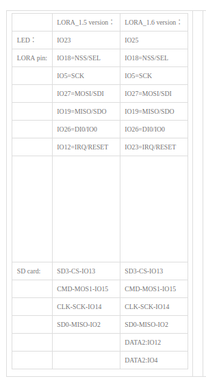

PinOUT de la MicroSD
Para definir el conexionado en la librería que trabaja sobre el lector microSD, debemos conocer primero el pinout del mismo que está conectado en puerto SPI. Los pines del puerto SPI del lector son:
- CS: IO13
- MOSI: IO15
- MISO: IO2
- SCK: IO14
